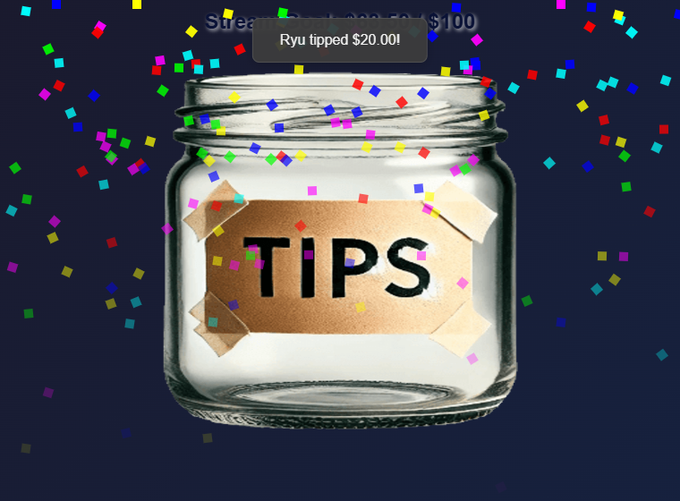

Mode dons ou score Hype ?
| Mode | Éléments comptés | Idéal pour |
|---|---|---|
| Tip Jar normal | Super Chats, Cheers/Bits, pourboires et autres données contenant un montant de don | Objectifs monétaires ou en unités natives |
| Nombre de dons (Donation count) | Chaque événement payant admissible compte pour un, quelle que soit sa valeur | Objectifs comme 7 / 20 Super Chats |
| Score Hype Cup (Hype Cup Scoring) | Dons, adhésions/abonnements, renouvellements et adhésions/abonnements offerts | Un objectif commun de points de soutien |


style=meter) : le même objectif sous forme de barre de progression avec les soutiens récents.Choisir un style
Ouvrir la galerie d’aperçus de styles sans risque pour comparer les dispositions d’exemple sur fond clair ou sombre. Les aperçus ne se connectent pas aux incrustations en direct et ne lisent ni n’enregistrent de totaux de dons. Collez votre lien Tip Jar existant dans la galerie pour copier un lien stylisé en conservant sa session, son objectif et ses filtres.
Les styles existants gardent leur apparence originale par défaut. Activez Apparence actualisée (Refreshed appearance) (&refresh) uniquement si vous souhaitez les nouveaux espacements, couleurs et typographies. Les nouveaux styles ci-dessous se sélectionnent séparément.
Tous les styles utilisent les mêmes totaux de dons, filtres, objectifs de comptage, scores Hype et objectifs récurrents. Choisissez-en un sous Style, objectif et filtres → Style d’affichage (Style, Goal, and Filters → Display Style).
Activer Masquer les signes dollar (Hide dollar signs) dans la même section, ou ajoutez &hidecurrency à l’URL de l’incrustation) pour afficher 0.00 / 500 au lieu de $0.00 / $500. Désactivée par défaut, cette option ne modifie que l’affichage de l’objectif ; les valeurs des dons, la conversion et les libellés Bits ou autres unités restent identiques.
- Bocal (Jar): le gobelet classique avec des objets qui tombent.
- Jauge d’objectif (Goal Meter): une barre de progression avec les soutiens récents dans un panneau sombre.
- Barre d’objectif fluide (Fluid Goal Bar): une large barre animée pour mettre l’objectif en évidence.
- Barre compacte (Compact Bar): une petite barre adaptée à un coin ; Barre verticale (Vertical Bar): un thermomètre pour une colonne latérale.
- Minimal: grands totaux et pourcentage ; Texte seul (Text Only): un simple affichage textuel.
- Carte d’objectif (Goal Card) (
style=card) : un panneau compact avec un grand total et une fine barre de progression. - Anneau de progression (Progress Ring) (
style=ring) : un affichage circulaire du pourcentage au-dessus du total de l’objectif. - Bandeau inférieur (Lower Third) (
style=lowerthird) : un panneau large et bas, avec le titre à côté du total. - Barre segmentée (Segmented Bar) (
style=segmented) : un panneau d’objectif avec vingt segments de progression.
Les nouveaux panneaux prennent en charge les thèmes Default, Neon et Gold. Les réglages existants de couleur de remplissage fonctionnent aussi ; l’anneau utilise un trait uni dont la couleur évolue avec la progression. Les fonds extérieurs à l’incrustation restent transparents pour OBS.
Pour les quatre nouveaux panneaux, les contrôles facultatifs comprennent panelopacity=0.5 (0–1), accent=%2366d9b2 (couleur hexadécimale à six chiffres), amountsize=32 (12–96 pixels) et hidepercent. Les couleurs explicites de début/fin du remplissage priment sur la couleur d’accentuation pour la progression. Laissez les valeurs vides pour utiliser les réglages par défaut du style. La taille du texte de barre et « barre uniquement » s’appliquent à Fluid Goal Bar ; une image de bocal personnalisée s’applique uniquement à Jar.
Configuration
- Activez la source YouTube, Twitch ou autre dans Social Stream Ninja.
- Ouvrir Tirelire et jauge d'objectif, puis ouvrez ses options.
- Laissez Hype Cup Scoring désactivé pour un objectif limité aux dons. Activez-le pour un objectif mêlant plusieurs formes de soutien.
- Choisissez si l’objectif mesure la valeur des dons ou le nombre de dons admissibles.
- Choisissez le style d’affichage, l’objectif, le titre, les filtres de sources/événements et la conservation des données.
- Copiez le lien Tip Jar mis à jour et ajoutez-le à OBS comme source Navigateur.
Compter les Super Chats YouTube plutôt que l’argent
- Laissez Score Hype Cup (Hype Cup Scoring) désactivé.
- Définissez Mesure de l’objectif (Goal measures) à Nombre de dons admissibles.
- Définissez Filtre de source (Source filter) à YouTube.
- Définissez Filtre d’événements payants (Paid event filter) à Super Chats uniquement (Super Chats only).
- Définissez la cible de l’objectif, par exemple
20. L’incrustation affiche une progression telle que7 / 20 Super Chats.
La valeur d’un Super Chat n’influence pas un objectif de comptage : un Super Chat de $1 et un de $100 ajoutent chacun un. Les adhésions, adhésions offertes, Super Stickers et cadeaux YouTube ne font pas progresser un objectif limité aux Super Chats.
Fonctionnement des valeurs Hype
- Points par abonnement/adhésion : points fixes pour chaque nouvelle adhésion, nouvel abonnement ou renouvellement.
- Points par abonnement/adhésion offert : points fixes pour chaque cadeau. Un lot de 5 contribue à hauteur de
5 × giftpoints. - Points de don par USD : multiplicateur appliqué après conversion en USD des dons monétaires pris en charge.
- Libellé de l’unité de points : modifie le libellé affiché. Utiliser
$ne transforme pas les points d’adhésion en valeur monétaire exacte.
Les cadeaux YouTube ne sont pas tous équivalents
| Événement YouTube | Signification | Méthode de comptage |
|---|---|---|
| Super Chat / Super Sticker | Un message payant avec un montant monétaire | Mode normal ou Hype |
| Adhésions offertes | Quelqu’un a acheté des adhésions pour d’autres spectateurs | Le mode Hype utilise le nombre de cadeaux × les points configurés par cadeau |
| Destinataire d’un cadeau | Un spectateur a reçu une adhésion du lot | Ignoré pour les points par défaut afin d’éviter le double comptage |
| Joyaux / cadeaux virtuels | Un événement distinct de cadeau virtuel avec un montant en unités natives | Utilisez le filtre d’unité native correspondant |
Les événements d’adhésions offertes indiquent leur nombre et leur niveau, mais ni le prix d’achat ni le revenu net du créateur. Leur valeur monétaire exacte ne peut pas être calculée à partir de l’événement.
Objectif atteint et totaux enregistrés
- Les objectifs de dons normaux conservent leur total sauf demande de réinitialisation.
- Les objectifs Hype se réinitialisent par défaut une fois atteints ; le délai de fin détermine combien de temps la valeur atteinte reste visible.
- Reporter les points excédentaires (Carry extra points) conserve les points au-delà de l’objectif atteint.
- Conserver le total et augmenter la cible (Keep total and advance target) crée un objectif cumulatif progressif.
- Incrément d’objectif récurrent (Recurring goal increment) crée des niveaux répétés.
- Conserver le montant entre les sessions (Keep amount between sessions) enregistre le montant et l’historique dans ce navigateur ou profil OBS.
Dépannage
| Symptôme | Points à vérifier |
|---|---|
| Rien ne se met à jour | La source est active, l’incrustation est ouverte, les identifiants de session correspondent et les filtres correspondent à l’événement. |
| Les Super Chats comptent, mais pas les adhésions | Activez Hype Cup Scoring et laissez le type de don sur All donations. |
| Les adhésions offertes ajoutent moins que prévu | Elles utilisent des points fixes par cadeau, et non un prix d’achat indisponible. |
| Le total baisse une fois l’objectif atteint | Hype se réinitialise par défaut ; utilisez un objectif progressif pour un total cumulatif. |
| Un ancien montant réapparaît | La conservation des données est activée dans le même navigateur ou profil OBS. |
| Les adhésions offertes apparaissent deux fois | Désactivez le comptage des destinataires individuels de cadeaux. |
| Le nombre de Super Chats inclut les Super Stickers | Réglez Paid event filter sur Super Chats only. |
| Les adhésions offertes font avancer un objectif Hype | Activez Exclure les adhésions YouTube offertes ou excluez tous les cadeaux du score Hype. |
Les boutons de test du panneau testent actuellement les lignes de dons. Pour les problèmes d’adhésions ou de cadeaux, utilisez le dock ou le tableau de bord des événements avec la même session pour vérifier la réception avant de dépanner l’objectif.